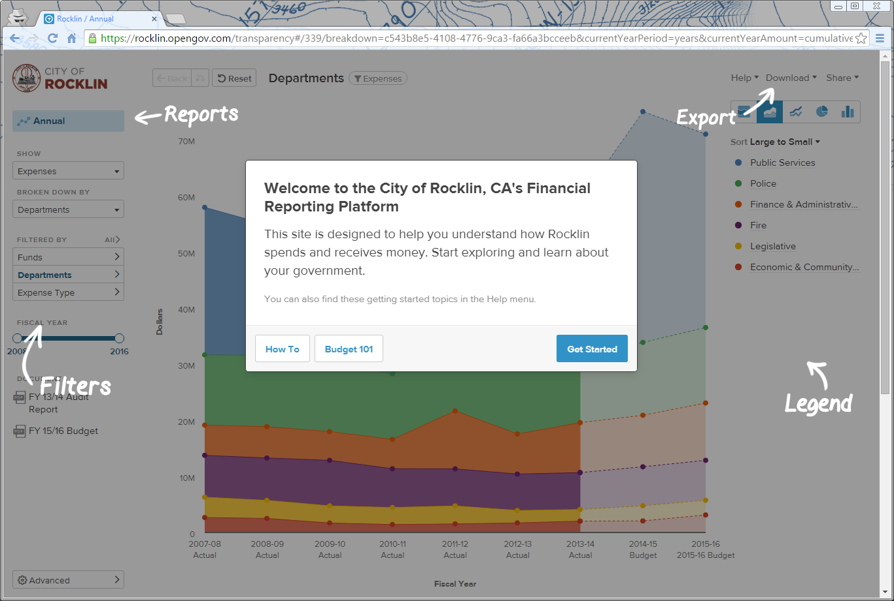

Sacramento Health Data Ambassadors, in partnership with IDMLOCO, are developing a website that visualizes emergency department visits for asthma by county and zip code.
Our goals for this project are to only demonstrate best practices for effective communication through data visualization, but to also document an iterative, agile software development process. In other words, the process is just as important as the end product. Users of the website will be able to download raw indicator data, manipulate geographical displays, and obtain other contextual information. By focusing on collaboration, we hope to create more durable products, and engage CHHS so that they can learn too, about how to integrate this concept into their own technology work.
In agile development, weekly or biweekly sprints are the frequency at which new, working features are released for the purposes of validating with users. At the end of each sprint, a standup meeting (or call) should occur to reflect, adjust, and iteratively refine the product roadmap as a better understanding of user needs emerges across all stakeholders. Because the process involves iteratively determining features as the product is built, it is not advisable to specify interim deliverables at the outset of the project.
Slide Deck 1st Mockup 2nd Mockup Feedback
Prior to commencing site development, we surveyed participants in the Sacramento Health Data Roundtable. Among other questions, the survey asked for their reaction to the proposed asthma data visualization site.
During Sprint 1, we interviewed three health/asthma data stakeholders to learn what they would find valuable in an asthma data visualization site. We showed them our initial wireframe concept for the site and asked for their reaction. Summaries of those interviews are below.
User testing period 1, from July 27 through August 7, 2015, consisted of three parts: a recorded user testing session, a survey asking interested stakeholders to rank proposed additions to the site, and an open-ended request for email feedback.
Conducted with an interested member of the general public, the recorded user testing session is available to watch in its entirety here.
We asked interested stakeholders to rank the following proposed additions to the website, from most to least valuable.
Numerical rankings from the six respondents (or respondent groups) are summarized in the table below. Other than respondent D, who was the outlier, all respondents ranked adding ethnicity and trend data as #1 and #2. Respondents C and E, who work specifically with asthma data, were very skeptical of risk factor overlays, indicating they were “too simplistic” or “might lead to erroneous conclusions”. Respondent F did not submit a survey, but indicated a strong preference for advanced sharing in a phone call.
| Feature | Average Ranking |
|---|---|
| Data Expansion - Ethnicity | 2.40 |
| Data Expansion - Trends | 2.80 |
| Advanced Sharing | 4.00 |
| Map Improvements | 4.25 |
| Customized Next Steps | 4.50 |
| Data Expansion - Risk Factor Overlays | 4.80 |
| Advanced Content Management | 5.00 |
| Advanced Analysis | 5.75 |
We also asked a number of stakeholders for open-ended feedback. Here follows a summary of a conference call and relevant excerpts from responding emails, anonymized to the respondents’ roles.
Just fyi, ALAC has a lot if this data. They use it to compile their state of the air reports. My rankings are below. I also sat with Ash yesterday and walked through the site, and it is recorded. I made some suggestions on how to improve the map and analysis tools. I think audience is key for this: how would a researcher, a political/policy staffer, and advocate, a community member use this. I thought some "helper" visualizations might be cool and assist lay audiences with understanding the tool better.
Helper visualizations example rocklin.opengov.com (you need to view in private mode or clear your browser cookies if you’ve ever visited an OpenGov site):
1) The CB website is printed at the top of the page, but that's confusing because it makes it seem like it's part of their program website.
2) We thought it would be more clear if everywhere that the 2022 target is mentioned, that it could be change to LGHC (or spelled out) target so it's totally clear what target is being referred to.
3) The 'context' section could use a little bit of explanation of what you are seeing below. Perhaps it will help just to label the LGHC target, or maybe it'll be more clear when the whole site is built, but right now it seems like it needs more context (no pun intended).
4) My understanding is that there is only a LGHC target for kids 0-17, so what is the target referring to when someone selects the other age ranges?
5) It would be nice for there to be some notes or other metadata to give context to the data (e.g., the source) - especially when the data are downloaded.
[Reasons for low rankings of two development options]
7) advanced analysis (mostly because I'm unclear about what this really means and what it would look like)
8) risk factor overlays - this is something we try to stay away from as an epidemiologist because it might lead to erroneous conclusions; also, this is already available (not as overlay, but the information) on the Tracking website.
The map is also visually simple and easy to interact. I admit I don’t get the Context section, what’s your y axis? Perhaps your most useful tool is the link to the CaliforniaBreathing.org site for the state Asthma Plan, I think this will be very helpful to a wide variety of audiences!
Suggestion: I would think it may be helpful, if the data is accessible, to add # of primary care asthma treatment sites (as a potential alternative to ED asthma care per county) to accentuate lower cost access opportunities.
Keep up the great work!
User Testing Period 2, from September 7 through September 11, 2015, consisted of an open-ended request for feedback on the largely completed asthma site. Emailed responses, anonymized to the respondents’ roles, are copied below.
Bravo! I've been spending some time reviewing the site since you sent it. Amazing to see this all coming together. I really like the curated stories and the ability forfolks to easily share them. Quick question: Is it possible to share the actual slide on Twitter as a photo, so it shows up when you tweet?
It was really fascinating to see the mis-classifications of of AI/AW as another race. Some really good insights for folks coming to the site overall to make sense of the data.
A couple things -
1) In the intro paragraph I think it might be good mention the interactive map itself so people can search. I know we have it on the left. But, maybe a line and a link to the map to reinforce the interactive nature. I think it's helpful to reinforce that folks can search on their own as well.
2) The zip code functionality does not seem to be working. When you switch over to zip codes nothing is showing up. Also, we talked about having a search tool, so you can type in your zip code or county. Is that possible to add?
3) I see ethnicity data in the overview, but the option is not available in the interactive map. Wasn't possible to add?
4) At the end of the overview slides, do we want to have one more with the source of this information, or as a footnote on one of the slides?
5) Finally, how about adding something to the footer to give CHHS some love for helping create the app in an agile fashion? Could say something like this...
A product of the California Health Data Project, a statewide effort funded by the California HealthCare Foundation’s Free the Data initiative in partnership with CHHS.
Probably too long I know. But, want to highlight them.
Also, I nudged the state folks to review the site and get back to us feedback.
Great job!!!
Huge ‘home run’ from my point of view! Well-designed, intuitive navigation, interesting and informative! Thanks for sharing.
I think this is looking fantastic – an excellent model of how a curated data story can be told, then shared via Twitter, etc. Congrats to all of you on a great product and great process leading us here! It’s a good model not only for LGHC but for other types of health data storytelling. To that end, when it’s ready, I’d love to share this with the counties and grantees we’re working with on improving county health departments’ capacity to tell stories with data.
I saw XX’s comments, which makes sense to me. Seems like from my perspective only some additional minor tweaks are needed. A few edits/Qs: